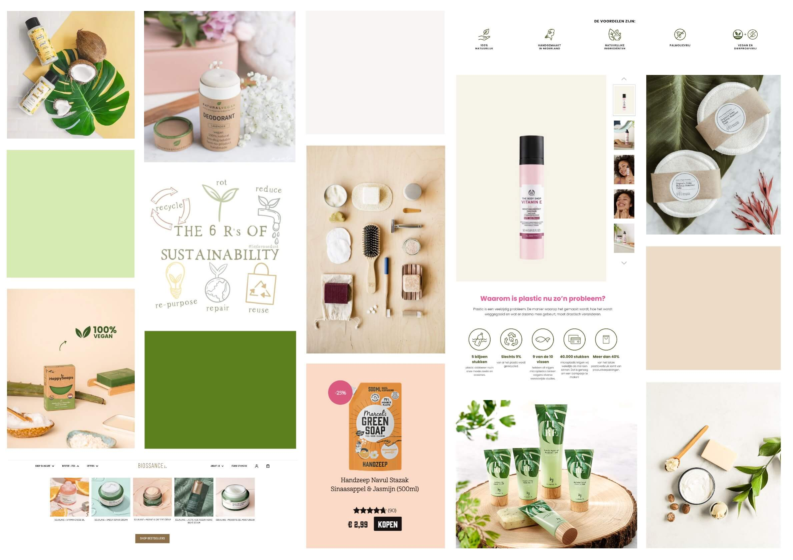

Over de opdracht
De opdracht voor het vak Grid & Kleur was om een thema te kiezen en in dat thema een product met een hernieuwde waarde voor de gebruiker te presenteren. Dit moest in de vorm van een website voor laptop/desktop.
De opdracht voor het vak Grid & Kleur was om een thema te kiezen en in dat thema een product met een hernieuwde waarde voor de gebruiker te presenteren. Dit moest in de vorm van een website voor laptop/desktop.
Ik had al meteen het idee om iets te gaan doen met duurzaamheid. Dus ben ik onderzoek gaan doen wat voor onderwerp ik kon gaan kiezen. Onder het onderzoek heb ik een mindmap gemaakt met allerlei soorten ideeën. Na mijn onderzoek heb ik gekozen voor het onderwerp duurzame verzorgingsproducten gekozen, omdat ik zelf zoveel mogelijk duurzame producten wil gebruiken. Ik ben opzoek gegaan naar zoveel mogelijk duurzame producten die ik in mijn website kon gebruiken, daarna ben ik gaan kijken naar hoe ik de website eruit wil laten zien door het maken van een moodboard. Toen ik een idee had van wat voor ontwerp het zou kunnen worden, ben ik gaan schetsen en wireframes gaan maken. Uiteindelijk heb ik het ontwerp hifi gemaakt en het ik er een klikbaar prototype van gemaakt.
Bekijk hier het eindresultaat van het prototype of klik er zelf doorheen.
Klik door het prototype